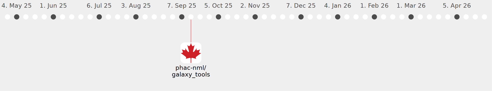

kbessonov1984

Commits all-time: 126
Commits last year: 49

(49)
- 629ed23
- 385cbb7
- 0902c1b
- f6f810a
- 91f24c0
- b3f192a
- 0ae397d
- 72a3cbb
- e15a1fe
- 91bb5f6
- 6b1265d
- 408d027
- fea6804
- 4db8ab7
- 1dc276b
- b446a28
- f1f03f8
- f574c20
- 1f9d941
- 7591b17
- 3a06666
- 10933c7
- b4d5edd
- 5493a93
- c9e2f95
- 4d13339
- 73244a9
- 7790eb3
- a1518a2
- 7be3727
- 23c1e8b
- e6daf63
- 8e069fd
- ab34281
- 08f3a74
- b7e6338
- 00e9442
- 4fab4cd
- c30cd28
- 20e805e
- f5f889a
- 9c984ae
- fb897cb
- 01dff58
- d3fd8e2
- 6a7b6e0
- 5c32266
- 2f4d8b6
- 8bd2d0f